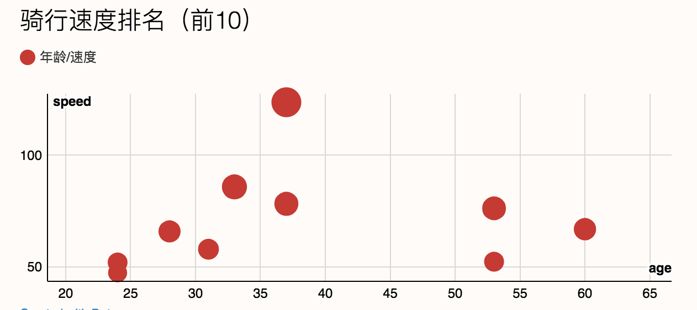
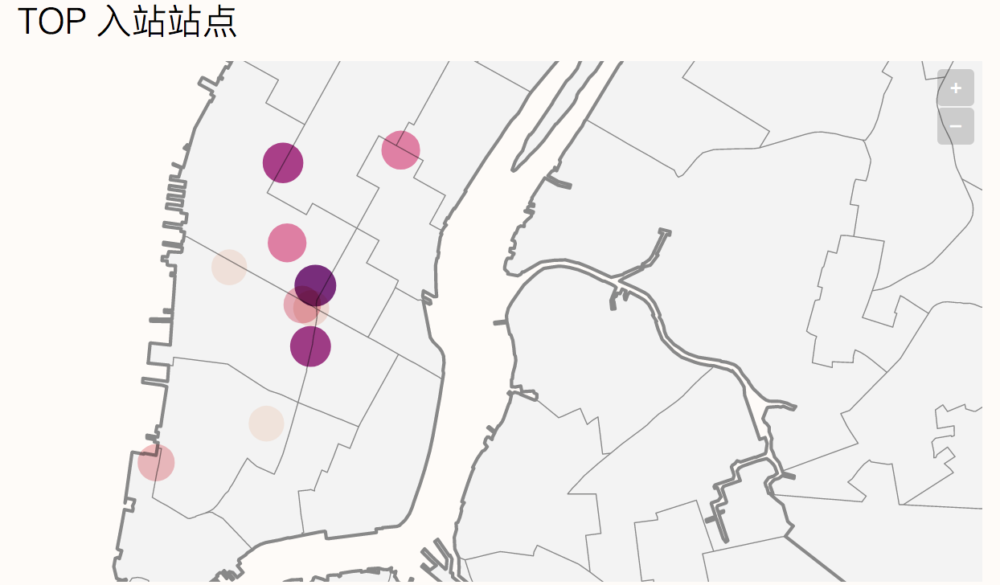

Spark bike 数据分析
Table of Contents
实验介绍
这个使用使用的是 New York's Bike Sharing 系统的数据，统计内容为 2014 年 9 月份的数据。Trip 数据可以在 CitiBike System 下载。Trip 数据的内容有：
- tripduration
- startdatetime
- stopdatetime
- startstationname
- startstationid
- stopstationname
- stopstationid
- stationlatitude
- stationlongitude
- bikeid
- usertype(Customer, Subscriber)
- gender(unknown, male, female)
birthyear
本次实验的主要目的就是通过 Kafka 接收用户的 Trip 数据，然后通过 Spark 的 Streaming 进行处理，处理的结果会存储到 MySql 数据库中。另外，利用 Spark 进行数据的处理分析，比较方便的语言是 Scala 和 Python, 这里我选择了 Python。
下面我的分析目标有下面的几个：
- 统计男女比例
- 统计 24 小时内，每个小时的的骑行人数
- 周末和非周末的骑行人数比较
- 统计车站热度排名
- 分析骑手的年龄、性别和骑行速度的关系
- 骑行时间多少分钟，统计
- 自行车数量
- 会员用户占比
- 各个年龄段的人数
实验步骤
因为使用了 Python 所以这里我使用了 Python Notebook 来做这个实验。
环境设置
这里的环境主要有 python, spark, kafka。基本上我们可以在官方网站把安装文件下载下来就可以了。其中 pyspark notebook 需要做些配置，具体如下：
- 安装 pyspark 和 jupyter
brew install apache-spark
pip install jupyter
设置环境变量
export SPARK_HOME='/User/yingdai/workspace/spark2.1' export PATH=$PATH:$SPARK_HOME/bin export PYSPARK_DRIVER_PYTHON=jupyter export PYSPARK_DRIVER_PYTHON_OPTS='notebook' export PYSPARK_PYTHON=python3.6运行 pyspark
pyspark --packages org.apache.spark:spark-streaming-kafka-0-8_2.11:2.1.0
准备数据
数据我是统计的 2014 年的数据，因为本地环境比较的慢，所以只对 9 月份的数据进行处理，数据量大约有 100 万。 首先在官方网站下载数据，然后解压：
wget https://s3.amazonaws.com/tripdata/201409-citibike-tripdata.zip
tar -xf 201409-citibike-tripdata.zip
Kafka 配置
Kafka 设置如下，
- 首先启动 zookpeeker。
# start zookeeper
bin/zookeeper-server-start.sh config/zookeeper.properties
启动 kafka 服务
bin/kafka-server-start.sh config/server.properties &创建一个 topic，用于接收数据，比如 bike
bin/kafka-topics.sh --create --zookeeper localhost:2181 --replication-factor 1 --partitions 1 --topic bike启动 kafka producer 服务，用于接收数据
bin/kafka-console-producer.sh --broker-list localhost:9092 --topic biki使用 python 脚本定期向 Producer 发送数据。
import logging import time from kafka import KafkaProducer def read_csv(filename, linenum, batch_line): count = 0 with open(filename, 'rb') as f: for i, line in enumerate(f): if i < linenum: continue else: Producer.send(line) count += 1 if count > batch_line: Producer.stop() return i f.close() class Producer(): @classmethod def send(self, data): self.producer = KafkaProducer(bootstrap_servers='localhost:9092') self.producer.send('bike', data) @classmethod def stop(self): self.producer.close() if __name__ == "__main__": logging.basicConfig( format='%(asctime)s.%(msecs)s:%(name)s:%(thread)d:%(levelname)s:%(process)d:%(message)s', level=logging.INFO ) current_line = 1 sleep_time = 10 # seconds while(1): print("====current_line is: {}======\n".format(current_line)) current_line = read_csv("2014-07.csv", current_line, 1) time.sleep(5)
Spark ETL, DataFrame 和 Sql
到这里我们 kafka 已经接收到数据了，下面就是通过 spark 接收 kafka 的数据：
from notebooks_py.kafka.load_data import process
from notebooks_py.kafka.load_data import load_csv
SparkConf().set("spark.streaming.kafka.maxRatePerPartition","1")
ssc = StreamingContext(sc, 5)
kf = KafkaUtils.createDirectStream(
ssc, ["bike"], {"bootstrap.servers": "127.0.0.1:9092"})
lines = kf.map(lambda x: x[1])
lines = lines.map(lambda line: line.split(","))
lines.foreachRDD(process)
上面这段代码
其中 process 部分代码如下：
def process(time, rdd):
print("========= %s =========" % str(time))
try:
# Get the singleton instance of SparkSession
spark = getSparkSessionInstance(rdd.context.getConf())
# Convert RDD[String] to RDD[Row] to DataFrame
rowRdd = rdd.map(lambda p:
Row(tripduration=int(p[0].strip('"')),
starttime=csd(p[1].strip('"')),
starttime_hour = csd(p[1].strip('"')).hour,
stoptime=csd(p[2].strip('"')),
stoptime_hour = csd(p[2].strip('"')).hour,
start_station_id=int(p[3].strip('"')),
start_station_name=p[4].strip('"'),
start_station_latitude=float(p[5].strip('"')),
start_station_longitude=float(p[6].strip('"')),
end_station_id=int(p[7].strip('"')),
end_station_name=p[8].strip('"'),
end_station_latitude=float(p[9].strip('"')),
end_station_longitude=float(p[10].strip('"')),
bikeid=int(p[11].strip('"')),
usertype=p[12].strip('"'),
birth_year=int(p[13].strip('"') if not p[13] == '""' else '0'),
gender=int(p[14].strip('"'))))
BikeDataFrame = spark.createDataFrame(rowRdd)
# Creates a temporary view using the DataFrame.
BikeDataFrame.createOrReplaceTempView("bike")
# Query SQL
sql_01 = "select starttime_hour, count(bikeid) from words group by starttime_hour order by starttime_hour"
BikeCountsDataFrame = spark.sql(sql_01)
BikeCountsDataFrame.show()
except Exception as e:
print('Error message: '+ str(e))
上面的 process 过程就是处理从 kafka 接收的实时数据流，然后创建 dataFrame。最后我们可以写 Spark Sql 语句来对我们的数据进行统计。
数据的持久化存储
上面是基本的操作流程，在实践过程中，我发现在本地 Spark 执行 sql 的速度非常的慢，而慢的地方主要还是 IO 操作。下一步我就是将数据存储到 mysql 数据库中。
def load_csv(conf):
spark = getSparkSessionInstance(conf)
schema = StructType([
StructField("tripduration", IntegerType(), True),
StructField("starttime", TimestampType(), True),
StructField("starttime_hour", IntegerType(), True),
StructField("stoptime", TimestampType(), True),
StructField("stoptime_hour", IntegerType(), True),
StructField("start_station_id", IntegerType(), True),
StructField("start_station_name", StringType(), True),
StructField("start_station_latitude", FloatType(), True),
StructField("start_station_longitude", FloatType(), True),
StructField("end_station_id", IntegerType(), True),
StructField("end_station_name", StringType(), True),
StructField("end_station_latitude", FloatType(), True),
StructField("end_station_longitude", FloatType(), True),
StructField("bikeid", IntegerType(), True),
StructField("usertype", StringType(), True),
StructField("age", IntegerType(), True),
StructField("gender", IntegerType(), True),
StructField("distance", FloatType(), True)
])
# for path in file_paths:
df = spark.read.format("csv").option("header", "true").load("citibike/201409-citibike-tripdata.csv")
try:
df = df.rdd.map(lambda p: Row(
int(p[0].strip('"')),
csd(p[1].strip('"')),
csd(p[1].strip('"')).hour,
csd(p[2].strip('"')),
csd(p[2].strip('"')).hour,
int(p[3].strip('"')),
p[4].strip('"'),
float(p[5].strip('"')),
float(p[6].strip('"')),
int(p[7].strip('"')),
p[8].strip('"'),
float(p[9].strip('"')),
float(p[10].strip('"')),
int(p[11].strip('"')),
p[12].strip('"'),
2018 - int(p[13].strip('"') if p[13] not in ('""', '\\N', None) else '0'),
int(p[14].strip('"')),
dis(float(p[5].strip('"')), float(p[6].strip('"')), float(p[9].strip('"')), float(p[10].strip('"')))
))
except:
pass
schemadf = spark.createDataFrame(df, schema)
schemadf.write \
.format("jdbc") \
.option("driver", "com.mysql.jdbc.Driver") \
.option("url", "jdbc:mysql://localhost/citibike") \
.option("dbtable", "trip") \
.option("user", "root") \
.option("password", "root") \
.mode('append') \
.save()
数据的分析
对于数据分析的工作主要在 mysql 中做的，执行的语句如下：
创建表
create database citibike;
use citibike;
create table trip (
id int primary key auto_increment,
tripduration int ,
starttime datetime,
starttime_hour int,
stoptime datetime,
stoptime_hour int,
start_station_id int,
start_station_name varchar(40),
start_station_latitude float,
start_station_longitude float,
end_station_id int,
end_station_name varchar(40),
end_station_latitude float,
end_station_longitude float,
bikeid int,
usertype varchar(10),
age int,
gender int(1),
distance float,
duration float
);
create table gender_age_speed (
age int,
gender int,
speed float
) select age, gender, distance/tripduration*3.6 as speed from trip;
用户类型
select usertype, count(*) from trip group by usertype;
年龄和平均骑行速度关系
select age, avg(speed) as avg_speed from gender_age_speed where speed > 0 group by age order by avg_speed desc;性别和平均骑行速度关系
select gender, avg(tripduration)/60.0 as duration from trip where distance > 0 group by gender;查询使用过的自行车数量
select count(distinct bikeid) from trip;查询出站站名和对应的经纬度，以及热度
SELECT distinct(start_station_name), start_station_latitude, start_station_longitude, a.sum FROM (SELECT start_station_id, COUNT(*) AS sum FROM trip GROUP BY start_station_id ORDER BY sum DESC limit 10) AS a, trip WHERE trip.start_station_id = a.start_station_id order by a.sum desc;查询入站站名，经纬度，热度
SELECT distinct(end_station_name), end_station_latitude, end_station_longitude, a.sum FROM (SELECT end_station_id, COUNT(*) AS sum FROM trip GROUP BY end_station_id ORDER BY sum DESC limit 10) AS a, trip WHERE trip.end_station_id = a.end_station_id order by a.sum desc;性别比例统计
SELECT gender, COUNT(*) AS sum FROM trip GROUP BY gender;24 小时骑行分布统计
SELECT starttime_hour, COUNT(*) AS sum FROM trip GROUP BY starttime_hour ORDER BY starttime_hour;9 月 3 日，24 小时骑行分布
select starttime_hour, count(*) as sum from trip where DATE_FORMAT(starttime, '%Y-%m-%d') = DATE_FORMAT('2014-9-3', '%Y-%m-%d') group by starttime_hour order by starttime_hour;计算各个年龄段的用户数
select age div 10, count(*) from gender_age_speed where age < 100 group by age div 10;
统计结果
用户分析
数据可视化使用了工具 DataWrapper。下面的图片可以在线浏览（Spark bike 数据分析）。 用户类型分析
上图我们可以得知，有接近 85 万的用户为订阅用户，小于 10 万的用户为非订阅用户，接近 9:1。这就说明大部分的用户都是经常骑自行车的用户。
用户性别比例
上图中，男性人数为 65 万左右，女性为 20 万，其中的不到 10 万性别未知， 但是从这里我们可以看到男性是远远大于女性用户的。这也从侧面反映了，男性相比于女性来说对自行车更加的热衷。
用户年龄和骑行速度

图中点的大小反映了速度的大小，速度越大点越大。这里有一个令人比较惊讶的现象，就是骑车的速度并不是和年龄呈负相关，而是在一定年龄段的比较高。由图中可以看到，30-40 岁左右骑车的速度明显要高于其他年龄段的人群，而 20-30 岁这个阶段的骑车速度还要略低于 50-60 岁这个阶段的人，这确实比较令人吃惊。由于这次的统计数据量为 100 万左右可能不足以反映真实的情况， 但也能从一定程度上说明，并不是越年轻越爱运动。
用户性别和骑行时间的关系
上面是自行车的骑行时间根据性别来统计的结果。男性和女性的骑行时间接近， 大约接近 14 分钟，这也说明了用户骑行主要是为了短途的代步而不是为了长距离的出行。
用户的年龄分布
这里的年龄分布统计了 0-100 之间的用户，其中的 0-20 间的用户数为 0，猜测可能只有成年人才可以用租用自行车。使用自行车最多的两部分人群分别是 30-39 岁和 40-49 岁间的人，占比为 60% 左右。这里参照上面年龄和速度的关系，也能得到这部分人群才是热衷与城市自行车的人，所以如果想要推广，他们应该作为主要的目标人群，而不是我们想的年轻人。
车站相关统计
对一个用户来说，有出站点和入站点。下面我们来分析一下，哪一个站点热度比较的高，也就是客流量比较的大。
出站站点热度排名前 10 的数据如下：
图中列出了出站站点热度排名，比如 8 Ave & W 31 St 这个站在一个月内达到了 12000 多次。从这里我们应该可以分析该站附近人口比较密集，其他几个排名靠前的站也应该类似。
入站站点热度排名统计前 10 的结果如下：
图中描述了入站站点热度，和出站排名前 10 几乎吻合，只有 2 个站没有出现在出站前 10 名中。
综合热度排队结果如下：
这个图是描述站点的综合排名，包括出站情况和入站情况。综上分析，我们可以得知大部分的人都是围绕在这几个站周围活动，所以前面统计的平均骑行时间为 14 分钟是非常合理的。
由于呀知道每个站点的经纬度，所以我对上面热度比较高的站点在地图上显示，看一下他们的具体位置如何。
TOP 10 出站站点
这几个站点从地图上看离的还是比较近的，其中有两个距离比较的远。
TOP 10 入站站点

这个图中，我根据热度调整了点的颜色，颜色深的证明客流量比较的大，从图中可以看出最深的那个点几乎是在城市的中心位置。
日期相关统计
周末和非周末车次比较
这个图中对比非常明显，我们这里特意选择了一个周末和非周末进行比较。其中 9 月 3 日为周三，9 月 6 日是周六。
绿线中我们可以看到在 7 点-8 点和 17 点-18 点为两个高峰期，而中午为低谷。这是很好解释的，因为上班和下班时间正好是这两个高峰期，而中午一般不会回家。 同时，这似乎可以解释了为什么年轻人比较少。中年人可能都是在周围有房子的人，而年轻人可能就要走较远的路，所以不会选择骑车，而是选择其他的交通方式。
另外，周末的时候中午却是一个高峰期，因为不上班时间多，人们这个时间更愿意出来。
24 小时内车次分布
这个是一个月内的所有数据的统计情况，与上面解释的基本是一样的，也是在早晚有两个高峰期。